本地windows 下面 tempest pip依赖不好装（比较麻烦，有些需要编译啥的）。所以考虑远端运行，本地只是用来调试。
project 解释器里面增加：
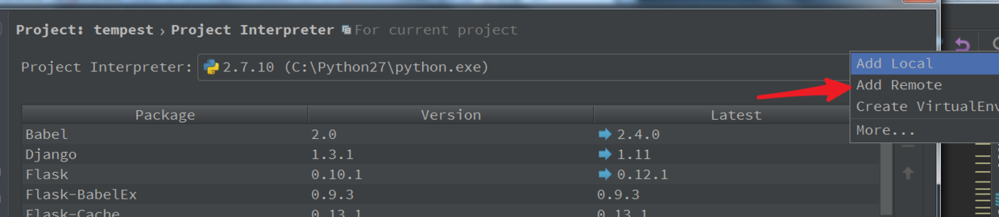
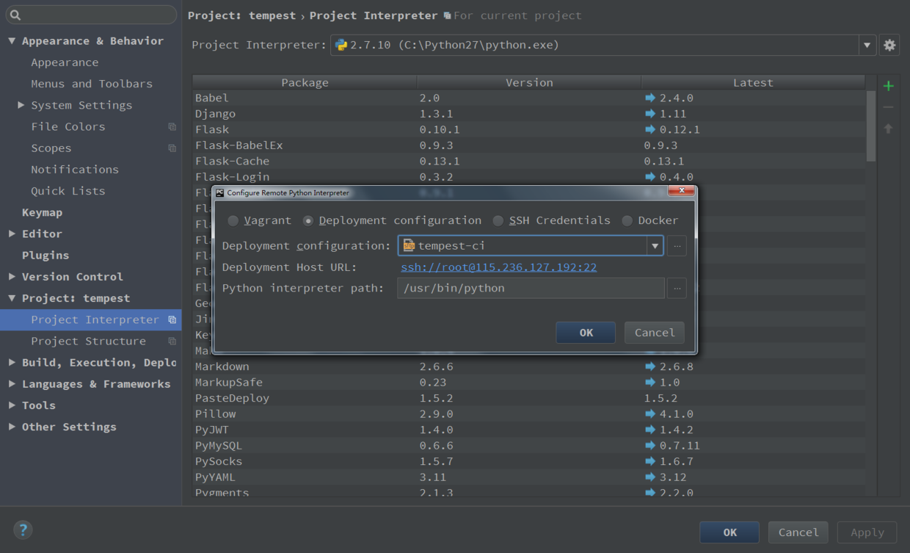
远程linux 的信息
1
2
3
4
5
6
7
8
9
10
11
12
13
14
15
16
17
18
|
root@cnsrc-cns-tempest-ci:~/tempest_netease/tempest-ci/tempest# ip a
1: lo: <LOOPBACK,UP,LOWER_UP> mtu 16436 qdisc noqueue state UNKNOWN
link/loopback 00:00:00:00:00:00 brd 00:00:00:00:00:00
inet 127.0.0.1/8 scope host lo
inet6 ::1/128 scope host
valid_lft forever preferred_lft forever
2: eth0: <BROADCAST,MULTICAST,UP,LOWER_UP> mtu 1400 qdisc pfifo_fast state UP qlen 1000
link/ether fa:16:3e💿d1:a4 brd ff:ff:ff:ff:ff:ff
inet 10.180.65.60/23 brd 10.180.65.255 scope global eth0
inet6 fe80::f816:3eff:fecd:d1a4/64 scope link
valid_lft forever preferred_lft forever
3: eth1: <BROADCAST,MULTICAST,UP,LOWER_UP> mtu 1500 qdisc pfifo_fast state UP qlen 1000
link/ether fa:16:3e:f2:57:f4 brd ff:ff:ff:ff:ff:ff
inet 115.236.127.192/24 brd 115.236.127.255 scope global eth1
inet6 fe80::f816:3eff:fef2:57f4/64 scope link
valid_lft forever preferred_lft forever
root@cnsrc-cns-tempest-ci:~/tempest_netease/tempest-ci/tempest#
|
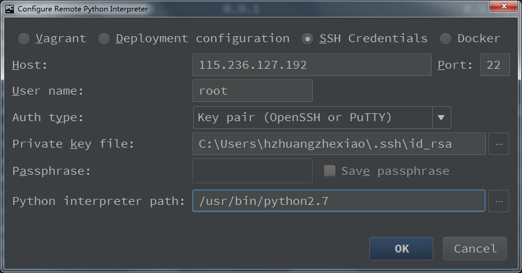
下面这个配置很重要, Local Path 是本地 py 文件存储的地方(默认为当前工程所在地方), Remote Path 为远程 Linux 的目录,编辑本地的 py 文件后,在调试时,远程的 python 环境不会直接运行你本地文件夹的 py 文件,而是访问 Linux 自己的目录,这个目录就是这里设置的,接下来就是配置这连个文件夹同步即可.
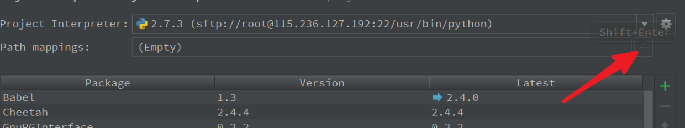
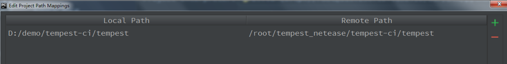
调试一下
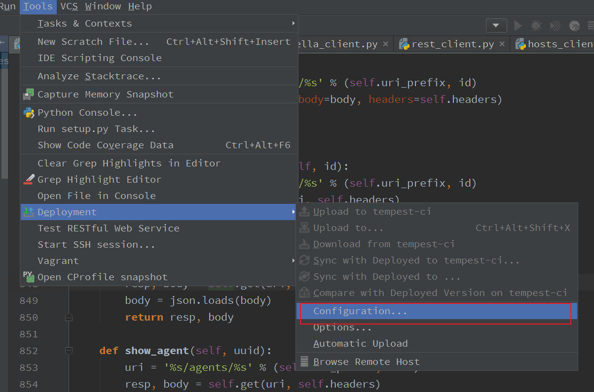
配置sftp选项，相当于两边目录同步之类的
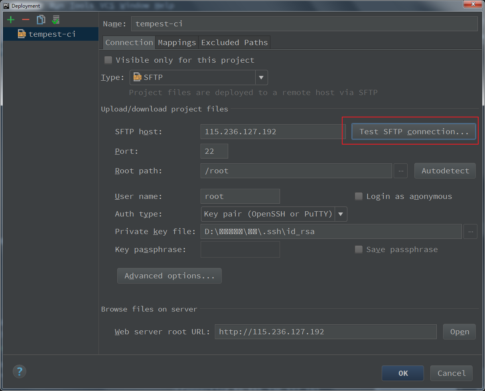
配置mapping
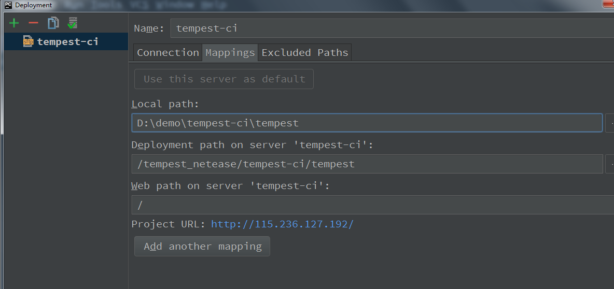
option里面，配置这个选项，本地选上 ctrl +s就是保存并同步到远端。
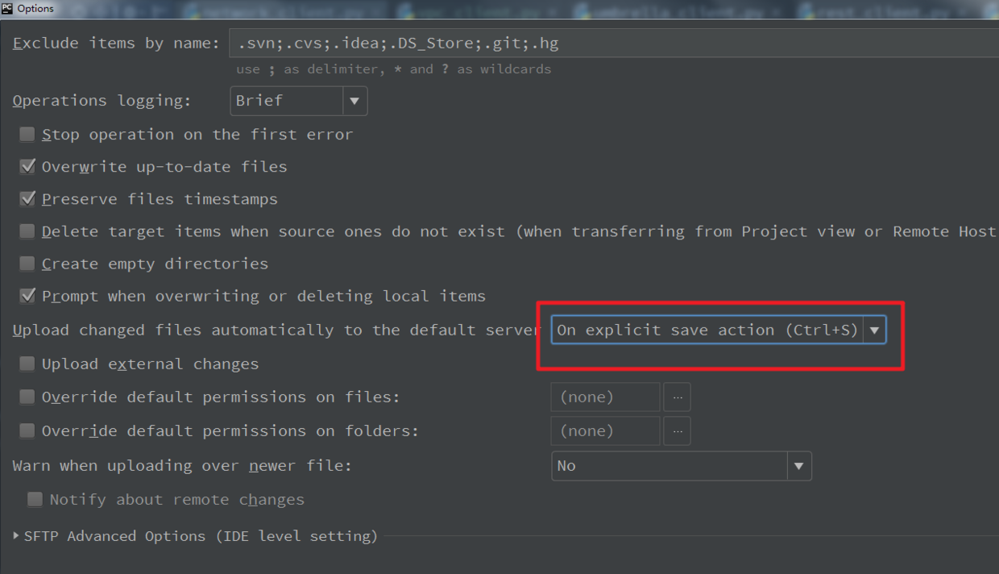
上传代码也可以手工上传。
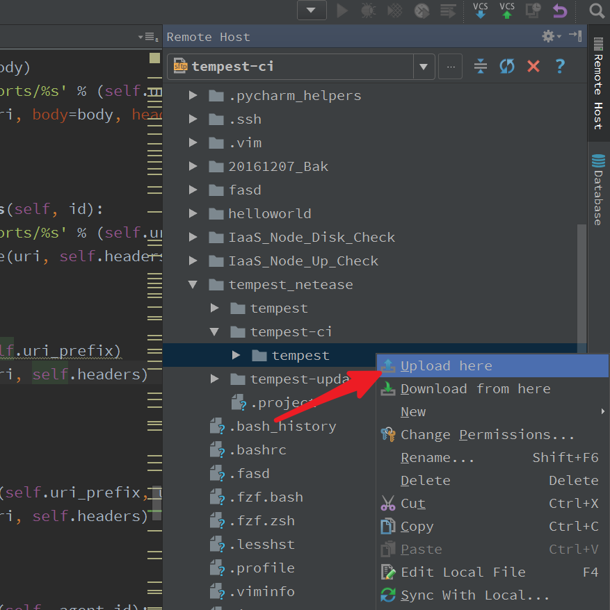
测试一下，命令行下执行：
1
2
3
4
5
6
7
8
|
root@cnsrc-cns-tempest-ci:~/tempest_netease/tempest-ci/tempest# nosetests -sv tempest/api/network/test_ports.py:PortsTestJSON.test_create_update_port_with_second_ip
tempest.api.network.test_ports.PortsTestJSON.test_create_update_port_with_second_ip[gate,smoke] ... ok
----------------------------------------------------------------------
Ran 1 test in 17.497s
OK
root@cnsrc-cns-tempest-ci:~/tempest_netease/tempest-ci/tempest#
|
pycharm端的runner配置为，即nose设置
选择对应的文件
1
|
D:\demo\tempest-ci\tempest\tempest\api\network\test_ports.py
|
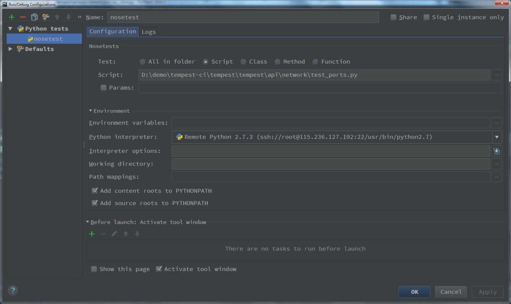
跑过的话效果如下：（直接远端跑tempest代码）
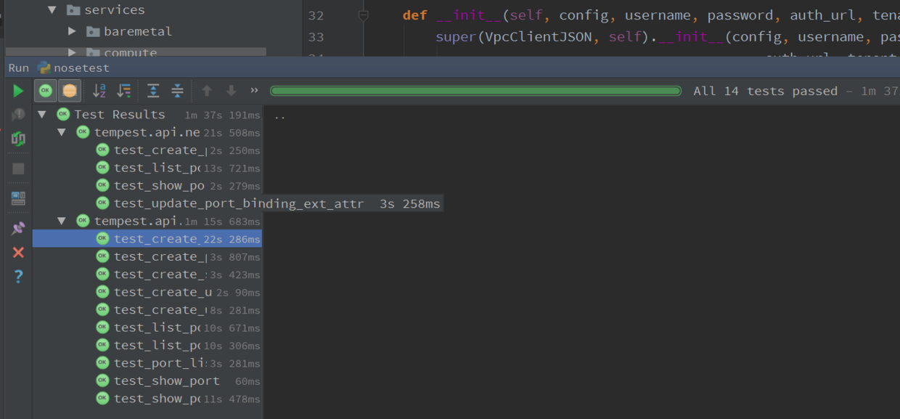
如果测试某一个具体的方法，可以这样指定：
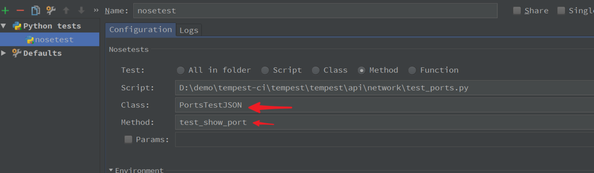
打断点，debug也可以使用了。
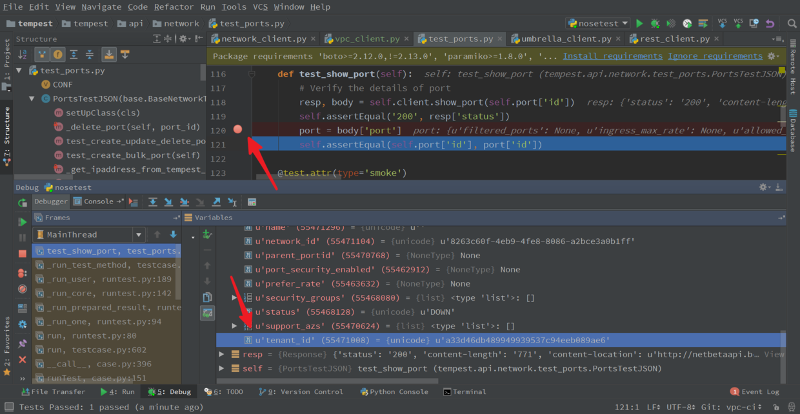
good！